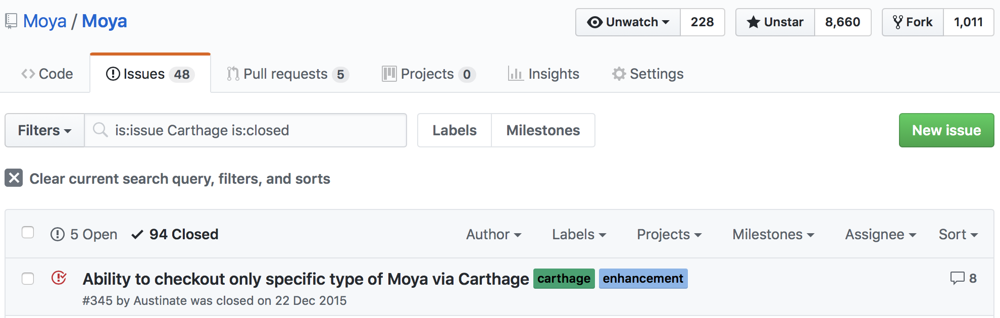
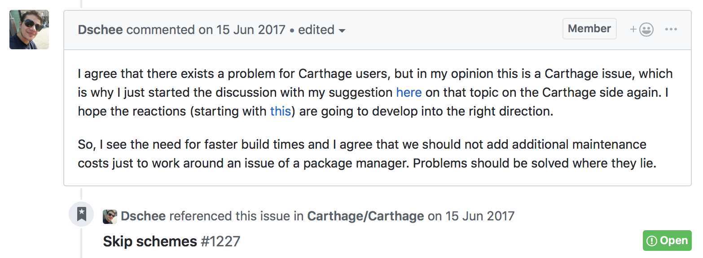
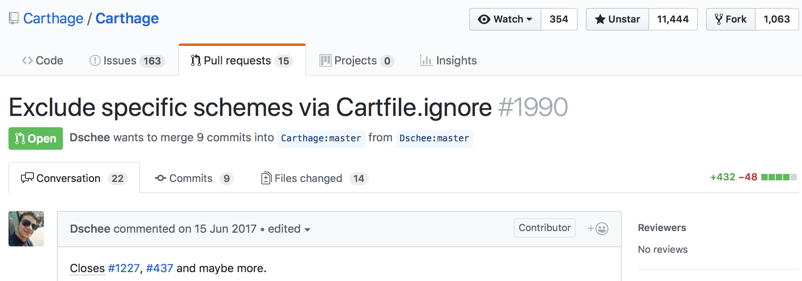
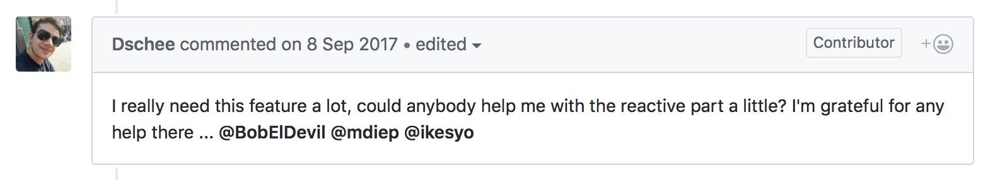
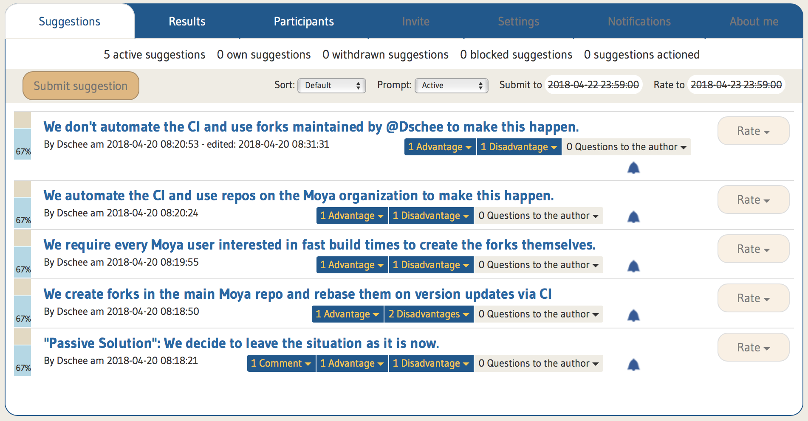
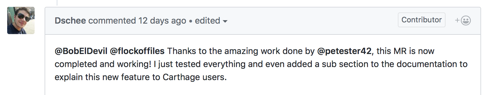
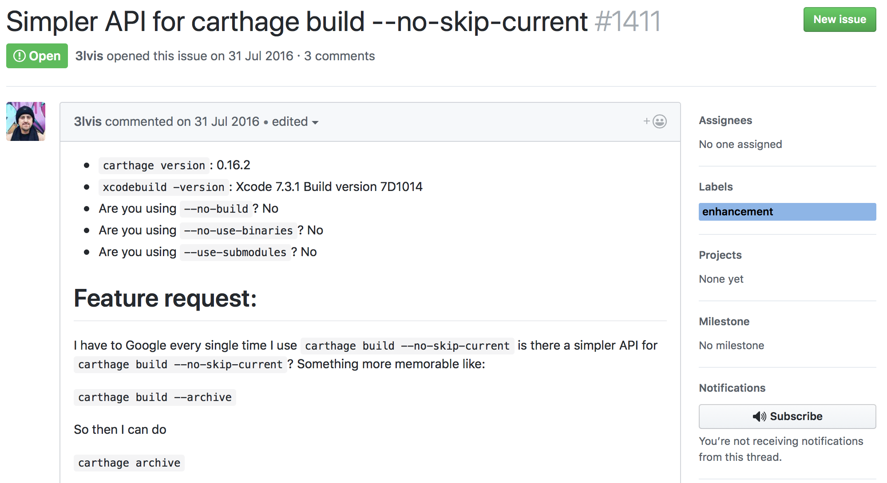
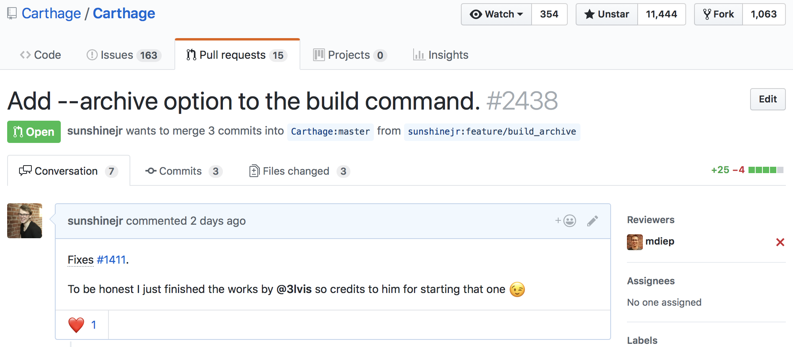
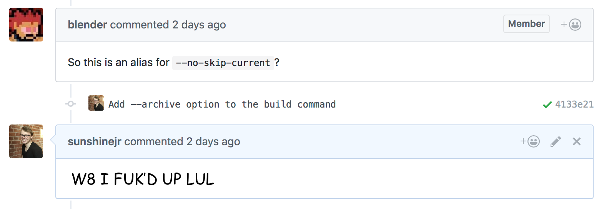
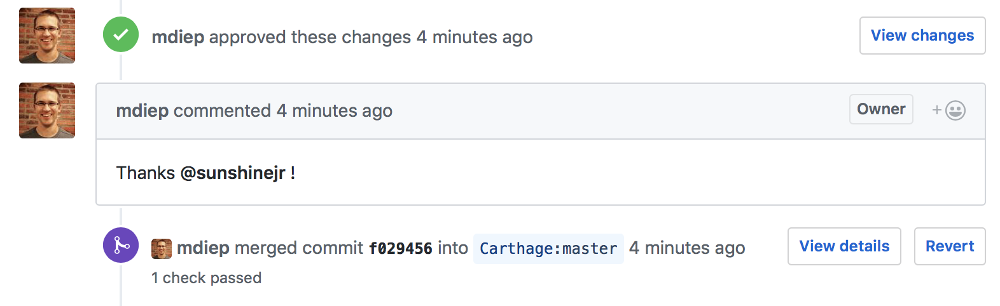

Open Source Adventures #3 - Carthage
May 8, 2018 17:09 · 5 minute read
Carthage is a simple, decentralised package manager. And while CocoaPods is still the most mature package manager for iOS, Carthage is a good alternative because it’s written in a language known to many iOS devs - Swift (where CocoaPods is written in Ruby).
It is great to know that whenever you encounter a problem with your dependency manager, you can browse through the source code and fix the issue by yourself! All because the tool is written in a language that you use on a day-to-day basis.
This reason solely should attract more people from the iOS community to contribute back. But, even though Carthage is written in Swift, many are still afraid of code contribution. One of the reasons, at least for me, is that Carthage uses reactive and functional programming somewhat excessively in its codebase. And when you combine it with the fact that dependency management is not an easy thing to implement right, the entry barrier seems rather high.
The chicken or the egg?
Over at Moya, we support Carthage as well as CocoaPods and Swift Package Manager. And where with both CocoaPods and SPM we didn’t have many problems, Carthage was an issue since day one:

TL;DR Moya has a specific setup that doesn’t work well using Carthage. Other dependency managers supported it out of the box, so we wanted to fix it on a Carthage level. Conclusion was that this feature would bring too much complexity to Carthage, so it was abandoned. We waited two years and the issue was raised yet again:

This time someone found a way to implement a workaround on a Carthage level without introducing much complexity. The solution wasn’t ideal from the users perspective, but it would solve all our problems with Carthage support. And so the implementation began:

Unfortunately, after few comments and fixes, @Dschee encountered a blocker - the reactive part of the PR:

And so the PR was frozen for about eight months till April this year. Then, @Dschee came back to us with few solutions that were far from perfect, but he felt that the Carthage fix won’t be seeing the light of the day anytime soon. And because many people were waiting for a solution, we started discussing the possible fix.
Unfortunately, I didn’t like any of the proposed solutions. I wanted to get to know Carthage and finish the works, but the entry barrier was putting me off…
And then we decided to make a poll and choose the best solution from what we had and go from there.

Then, just before the end of the poll, one of Moya’s contributors, @petester42, stepped in and helped with finishing the works on the Carthage PR - this was something I didn’t even wish for at that time, but it was incredible. We finally had a good compromise that we could all agree on.

The “CI” problem
About two weeks later I was fighting with our CI setup and as it turned out, our Carthage build didn’t want to pass. So I started googling for issues on Carthage and found one that was quite similar to our case:

The author, @3lvis, started implementing the fix, but when he encountered a non-helpful error message, he seemed to abandon the works as no activity was found for about seven months straight. And unfortunately, after an extensive investigation, this issue wasn’t even connected to our problem.
But still, there was an attempt to fix it, some of the works were already done, and I understood what potential solution would look like so I started digging. Additionally, I felt sorry that I didn’t do much to help with the Carthage issue before, so I had a chance to make up for it (at least a little bit).
Implementing the fix
Setting up a development environment for Carthage was really easy. One command in the terminal, a few minutes later and I could start developing. Their contributing documentation was pretty helpful at explaining how to run the updated executable or how to come back to the original version - kudos!
The implementation was quite interesting. I didn’t know what to expect because I had many nightmares about reactive/functional/imperative spaghetti before. There was a currying library here or custom operators like pipe there, but the code wasn’t that hard for me to reason about. I was pleasantly surprised because overall experience was far better than I thought it would be.
I started looking if there was a similar functionality to what I was trying to achieve and, to my surprise, there was! I couldn’t really copy/paste it (👿), but I learned the overall design so I could implement something similar:

When I created the PR with the fix (which in fact was a feature), one of the contributors, @blender, asked if this PR is making an alias on existing functionality… And then I figured that I didn’t test and push the whole code… I’ve missed one commit 🤦🏼♂️

And so I had to rebuild the library, test it and then push again to the remote (this probably took more than the implementation to be honest). But finally, after one additional fix in the PR, my PR was merged:

And I could finally mark my “Contribute to Carthage” task as completed. ✅
Finale
This whole situation with Moya and Carthage could’ve been finished earlier if only I dared to try and finish the works last year. I felt bad for it, although I know I shouldn’t - Open Source world is hard for people who do not work on it as a day-to-day job, and we have to choose and prioritise what’s important and what’s less important.
I’m thrilled that I finally got to give back to the Carthage community, though. They are great people that try their best, and I appreciate that a lot. The only thing that’s missing, in my opinion, is a better environment for beginners: labels for what is a good-starter task, or maybe Moya’s community guidelines. Having more hands to work on this project would make it even more awesome than it is now 😉